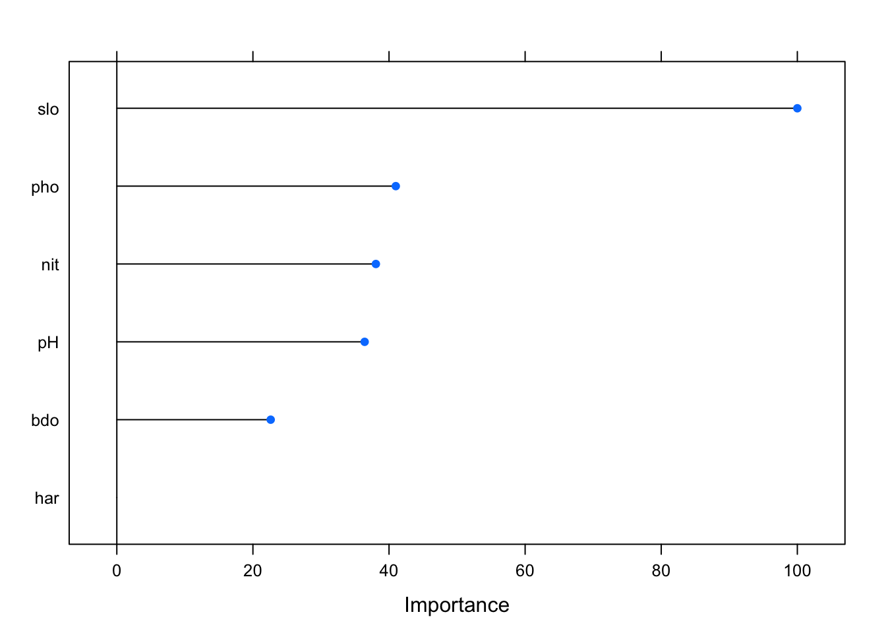

Generalised Linear Models (GLMs)
1 Introduction
In classical linear regression model we make predictions of the expected value of a response variable as a function of the linear sum of covariates (also known as independent, explanatory or predictor variables). Generalised Linear Modelling (GLM) relaxes the constraintthat ordinary linear regression has, in that the response variable does not have to be normally distributed.
Why is the GLM useful for ecology problems? Often in ecology the response variable is in the form of a count of species presence or absence, and in general the response variable exhibits a mean-variance relationship that is not normally distributed.
1.1 Three key properties of the GLM
- In a GLM it is assumed that the response variable (and residual errors) is from a distribution in the exponential family. The distributions from the exponential family and their relevance comprise:
- Negative binomial regression - non-negative count data, but variance can vary independently of the mean in order to handle overdispersion
- Poisson regression - non-negative count data. Here the mean equals the variance. A sub-class of the negative binomial
- Gamma regression - can be used with positive continuous data
- Binomial (or logistic) regression - typically used with binary or proportional data.
The response variable is a linear sum of the predictor variables
There is a linear relationship between a function g (the link function ) of the mean of the response variable, and the predictor variables. This function is used to transform the non-linear relationship to a linear one. There are a number of different link functions for each response variable distribution.
More detail on the mathematical basis for the GLM, and associated link functions, can be found here1.
Let’s start by loading the relevant libraries and some data.
1.2 The Doubs dataset
As in the Data Analysis vignette we will be using the doubs2 dataset inorder to create a GLM. Here the response is count data (species abundance) for river fish species across 30 sites. From our brief discussion above this means the data are likely to be drawn from a Poisson distribution. The covariates are a number of environment measurements of water chemistry and physical characteristics, at each of the 30 sites.
#Let's load the data
data(doubs)
# Set-up species data
species <- doubs$fish
# Set-up environmental data
environ <- doubs$envWe can get a quick overview of the response data (species counts at each of the 30 sites) set using the skimr package:
# Look at the data - drop the site column
skim(species)| Name | species |
| Number of rows | 30 |
| Number of columns | 27 |
| _______________________ | |
| Column type frequency: | |
| numeric | 27 |
| ________________________ | |
| Group variables | None |
Variable type: numeric
| skim_variable | n_missing | complete_rate | mean | sd | p0 | p25 | p50 | p75 | p100 | hist |
|---|---|---|---|---|---|---|---|---|---|---|
| Cogo | 0 | 1 | 0.50 | 0.94 | 0 | 0 | 0.0 | 0.75 | 3 | ▇▁▁▁▁ |
| Satr | 0 | 1 | 1.90 | 2.04 | 0 | 0 | 1.0 | 3.75 | 5 | ▇▁▂▁▃ |
| Phph | 0 | 1 | 2.27 | 1.98 | 0 | 0 | 3.0 | 4.00 | 5 | ▇▁▂▅▂ |
| Neba | 0 | 1 | 2.43 | 1.92 | 0 | 1 | 2.0 | 4.00 | 5 | ▇▂▂▂▅ |
| Thth | 0 | 1 | 0.50 | 1.01 | 0 | 0 | 0.0 | 0.75 | 4 | ▇▂▁▁▁ |
| Teso | 0 | 1 | 0.63 | 1.30 | 0 | 0 | 0.0 | 0.75 | 5 | ▇▁▁▁▁ |
| Chna | 0 | 1 | 0.60 | 0.86 | 0 | 0 | 0.0 | 1.00 | 3 | ▇▃▁▂▁ |
| Chto | 0 | 1 | 0.87 | 1.31 | 0 | 0 | 0.0 | 2.00 | 4 | ▇▁▂▁▁ |
| Lele | 0 | 1 | 1.43 | 1.50 | 0 | 0 | 1.0 | 2.00 | 5 | ▇▃▂▁▁ |
| Lece | 0 | 1 | 1.87 | 1.36 | 0 | 1 | 2.0 | 3.00 | 5 | ▇▅▃▂▁ |
| Baba | 0 | 1 | 1.43 | 1.76 | 0 | 0 | 0.0 | 3.00 | 5 | ▇▂▂▂▁ |
| Spbi | 0 | 1 | 0.90 | 1.40 | 0 | 0 | 0.0 | 1.00 | 5 | ▇▁▁▁▁ |
| Gogo | 0 | 1 | 1.83 | 1.84 | 0 | 0 | 1.0 | 3.75 | 5 | ▇▂▁▂▂ |
| Eslu | 0 | 1 | 1.33 | 1.52 | 0 | 0 | 1.0 | 2.00 | 5 | ▇▁▁▁▁ |
| Pefl | 0 | 1 | 1.20 | 1.54 | 0 | 0 | 0.5 | 2.00 | 5 | ▇▂▁▁▁ |
| Rham | 0 | 1 | 1.10 | 1.65 | 0 | 0 | 0.0 | 2.00 | 5 | ▇▁▂▁▁ |
| Legi | 0 | 1 | 0.97 | 1.40 | 0 | 0 | 0.0 | 1.75 | 5 | ▇▁▁▁▁ |
| Scer | 0 | 1 | 0.70 | 1.15 | 0 | 0 | 0.0 | 1.00 | 5 | ▇▂▁▁▁ |
| Cyca | 0 | 1 | 0.83 | 1.34 | 0 | 0 | 0.0 | 1.00 | 5 | ▇▁▁▁▁ |
| Titi | 0 | 1 | 1.50 | 1.74 | 0 | 0 | 1.0 | 3.00 | 5 | ▇▁▁▂▁ |
| Abbr | 0 | 1 | 0.87 | 1.53 | 0 | 0 | 0.0 | 1.00 | 5 | ▇▁▁▁▁ |
| Icme | 0 | 1 | 0.60 | 1.30 | 0 | 0 | 0.0 | 0.00 | 5 | ▇▁▁▁▁ |
| Acce | 0 | 1 | 1.27 | 1.89 | 0 | 0 | 0.0 | 2.00 | 5 | ▇▁▁▁▂ |
| Ruru | 0 | 1 | 2.10 | 2.20 | 0 | 0 | 1.0 | 5.00 | 5 | ▇▂▁▁▅ |
| Blbj | 0 | 1 | 1.03 | 1.71 | 0 | 0 | 0.0 | 1.75 | 5 | ▇▁▁▁▁ |
| Alal | 0 | 1 | 1.90 | 2.25 | 0 | 0 | 0.0 | 5.00 | 5 | ▇▂▁▁▅ |
| Anan | 0 | 1 | 0.90 | 1.45 | 0 | 0 | 0.0 | 1.75 | 5 | ▇▂▁▁▁ |
We can see that there are 27 species, with no missing data. Some are more numerous than others, but it doesn’t seem like the data are overdisperesed. It’s clear from the simplified histrogram column that species counts are not nomrally distributed, and that a Poisson distribution is probably a good fit for response variable data.
Similarly for the covariate dataset:
# Look at the data - drop the site column
skim(environ)| Name | environ |
| Number of rows | 30 |
| Number of columns | 11 |
| _______________________ | |
| Column type frequency: | |
| numeric | 11 |
| ________________________ | |
| Group variables | None |
Variable type: numeric
| skim_variable | n_missing | complete_rate | mean | sd | p0 | p25 | p50 | p75 | p100 | hist |
|---|---|---|---|---|---|---|---|---|---|---|
| dfs | 0 | 1 | 1879.03 | 1396.51 | 3.0 | 544.50 | 1752.00 | 3017.25 | 4530.00 | ▇▅▅▅▃ |
| alt | 0 | 1 | 481.50 | 271.39 | 172.0 | 248.00 | 395.00 | 782.00 | 934.00 | ▇▃▂▁▅ |
| slo | 0 | 1 | 2.76 | 1.08 | 1.1 | 1.83 | 2.56 | 3.39 | 6.18 | ▆▇▅▂▁ |
| flo | 0 | 1 | 2220.10 | 1810.19 | 84.0 | 420.00 | 2210.00 | 2857.50 | 6900.00 | ▇▇▃▁▁ |
| pH | 0 | 1 | 80.50 | 1.74 | 77.0 | 79.25 | 80.00 | 81.00 | 86.00 | ▁▇▆▂▁ |
| har | 0 | 1 | 86.10 | 16.87 | 40.0 | 84.25 | 89.00 | 96.75 | 110.00 | ▂▁▁▇▃ |
| pho | 0 | 1 | 55.77 | 87.64 | 1.0 | 12.50 | 28.50 | 56.00 | 422.00 | ▇▁▁▁▁ |
| nit | 0 | 1 | 165.40 | 141.34 | 15.0 | 50.50 | 160.00 | 242.50 | 620.00 | ▇▆▂▁▁ |
| amm | 0 | 1 | 20.93 | 37.91 | 0.0 | 0.00 | 10.00 | 20.00 | 180.00 | ▇▁▁▁▁ |
| oxy | 0 | 1 | 93.90 | 22.15 | 41.0 | 80.25 | 102.00 | 109.00 | 124.00 | ▂▃▃▇▆ |
| bdo | 0 | 1 | 51.17 | 38.64 | 13.0 | 27.25 | 41.50 | 52.75 | 167.00 | ▇▃▁▁▁ |
We can see that there are no missing data. We can visualise the response data against the covariates using the featurePlot function from the caret library.
featurePlot(x=environ, y= species$Ruru)
With this simple chart we see how the count for Ruru species is at a maximum for relatively low concentrations for ammonium and phosphate (amm and pho) and high values for chalkiness (har) of the river water.
Given the response and covariate datasets we can fit a GLM with the doubs data. We fit the count data for the species Ruru against all environmental covariates, usung a Poisson distribution. A response variable that is Poisson distributed usually has a log link function. Note, we know from the Data Analysis vignette that some covariates within the environ dataset have significant collinearity, so the model results may not be ideal.
# Fit GLM to species Ruru - use all environmental covariates to fit the model
ruru_model <- glm(formula = species$Ruru ~ . ,
# Use a Poisson distribution for the response variable
family= poisson(link = "log"),
data = environ)
# Summarise the model fit
summary(ruru_model)##
## Call:
## glm(formula = species$Ruru ~ ., family = poisson(link = "log"),
## data = environ)
##
## Deviance Residuals:
## Min 1Q Median 3Q Max
## -1.57253 -0.88709 -0.34156 0.08549 2.79357
##
## Coefficients:
## Estimate Std. Error z value Pr(>|z|)
## (Intercept) 2.119e+01 8.809e+00 2.405 0.0162 *
## dfs -4.277e-04 1.537e-03 -0.278 0.7809
## alt -3.473e-03 4.513e-03 -0.770 0.4415
## slo -4.544e-01 3.546e-01 -1.281 0.2000
## flo 7.666e-05 6.587e-04 0.116 0.9074
## pH -1.001e-01 1.297e-01 -0.772 0.4400
## har -9.824e-03 2.253e-02 -0.436 0.6627
## pho -8.443e-03 7.057e-03 -1.196 0.2316
## nit -3.028e-04 4.054e-03 -0.075 0.9405
## amm 1.575e-02 1.903e-02 0.828 0.4079
## oxy -7.058e-02 3.580e-02 -1.971 0.0487 *
## bdo -3.361e-02 1.867e-02 -1.800 0.0718 .
## ---
## Signif. codes: 0 '***' 0.001 '**' 0.01 '*' 0.05 '.' 0.1 ' ' 1
##
## (Dispersion parameter for poisson family taken to be 1)
##
## Null deviance: 81.864 on 29 degrees of freedom
## Residual deviance: 31.361 on 18 degrees of freedom
## AIC: 109.06
##
## Number of Fisher Scoring iterations: 6To understand which covariates are significant in the GLM, we can look at the p values associated with each covariate in the table above. We can see that the oxy covariate is significant as a predictor for Ruru abundance, when all covariates are used to fit a model.
We can also check to see if the model fit is over or under-dispersed by looking at the residual deviance. If the residual deviance is substantially greater than the degrees of freedom, then the model is over-dispersed; the predicted values are correct but the standard deviation are not accounted for by the model. In the model fit above the residual deviance is fairly close to the degrees of freedom, and the dispersion parameter is 31.361/18 = 1.74 (which is small), so the model is a good fit.
The null deviance shows the predicted response when only the intercept (the overall mean) is included in the data. We can see that adding the covariates into the model reduces the null-deviance by around 50. Again, a good sign in terms of the model’s overall suitability.
We can use an ANOVA test to check if treatments have an effect. For GLMs this is often called an analysis of deviance table.
# Genrate analysis of deviance
anova(ruru_model, test="LRT")## Analysis of Deviance Table
##
## Model: poisson, link: log
##
## Response: species$Ruru
##
## Terms added sequentially (first to last)
##
##
## Df Deviance Resid. Df Resid. Dev Pr(>Chi)
## NULL 29 81.864
## dfs 1 27.4477 28 54.416 1.614e-07 ***
## alt 1 0.0153 27 54.401 0.901578
## slo 1 2.5813 26 51.819 0.108131
## flo 1 2.7178 25 49.102 0.099235 .
## pH 1 1.8157 24 47.286 0.177830
## har 1 0.3063 23 46.980 0.579979
## pho 1 9.5635 22 37.416 0.001985 **
## nit 1 0.7029 21 36.713 0.401809
## amm 1 0.1921 20 36.521 0.661175
## oxy 1 1.7001 19 34.821 0.192279
## bdo 1 3.4598 18 31.361 0.062878 .
## ---
## Signif. codes: 0 '***' 0.001 '**' 0.01 '*' 0.05 '.' 0.1 ' ' 1We can see that the dfs and pho treatments seem to have a significant effect on the abundance of Ruru. From eyeballing the feature plot above we can see that there is a linear relationship between Ruru abundance and the distance from the source, and an inverse linear relationship between phosphorus concentration and Ruru abundnace. So the analysis of deviance results appear to make sense.
1.3 Stepwise regression and AIC
We can perform a stepwise regression whereby we fit a model with increasingly smaller subsets of covariates for the given response variable, and select the best model-fit according to the AIC results of the model. The basic idea of Akaike’s Information Criteria (AIC) is to penalize the inclusion of additional variables to a model. In general, the lower the AIC, the better the model. Our initial model fit gave an AIC of 109.
# Step through combinations
step_ruru <- step(glm(species$Ruru~., data=environ, family=poisson))## Start: AIC=109.06
## species$Ruru ~ dfs + alt + slo + flo + pH + har + pho + nit +
## amm + oxy + bdo
##
## Df Deviance AIC
## - nit 1 31.367 107.06
## - flo 1 31.375 107.07
## - dfs 1 31.439 107.14
## - har 1 31.549 107.25
## - alt 1 31.967 107.67
## - pH 1 31.982 107.68
## - amm 1 32.078 107.78
## - pho 1 32.790 108.49
## - slo 1 33.104 108.80
## <none> 31.361 109.06
## - bdo 1 34.821 110.52
## - oxy 1 35.640 111.34
##
## Step: AIC=107.06
## species$Ruru ~ dfs + alt + slo + flo + pH + har + pho + amm +
## oxy + bdo
##
## Df Deviance AIC
## - flo 1 31.410 105.11
## - dfs 1 31.503 105.20
## - har 1 31.594 105.29
## - pH 1 31.985 105.68
## - alt 1 31.999 105.70
## - amm 1 32.537 106.23
## - pho 1 33.089 106.79
## - slo 1 33.106 106.80
## <none> 31.367 107.06
## - oxy 1 35.755 109.45
## - bdo 1 36.295 109.99
##
## Step: AIC=105.11
## species$Ruru ~ dfs + alt + slo + pH + har + pho + amm + oxy +
## bdo
##
## Df Deviance AIC
## - har 1 31.607 103.31
## - dfs 1 31.736 103.44
## - amm 1 32.540 104.24
## - pH 1 32.894 104.59
## - alt 1 33.101 104.80
## - pho 1 33.114 104.81
## <none> 31.410 105.11
## - slo 1 33.985 105.68
## - bdo 1 36.574 108.27
## - oxy 1 42.050 113.75
##
## Step: AIC=103.31
## species$Ruru ~ dfs + alt + slo + pH + pho + amm + oxy + bdo
##
## Df Deviance AIC
## - dfs 1 32.150 101.85
## - amm 1 32.863 102.56
## - pH 1 33.013 102.71
## - pho 1 33.310 103.01
## - alt 1 33.440 103.14
## <none> 31.607 103.31
## - slo 1 34.004 103.70
## - bdo 1 37.524 107.22
## - oxy 1 43.062 112.76
##
## Step: AIC=101.85
## species$Ruru ~ alt + slo + pH + pho + amm + oxy + bdo
##
## Df Deviance AIC
## - pH 1 33.795 101.49
## <none> 32.150 101.85
## - amm 1 34.255 101.95
## - slo 1 34.430 102.13
## - alt 1 34.853 102.55
## - pho 1 34.932 102.63
## - bdo 1 37.748 105.45
## - oxy 1 46.584 114.28
##
## Step: AIC=101.49
## species$Ruru ~ alt + slo + pho + amm + oxy + bdo
##
## Df Deviance AIC
## - slo 1 35.054 100.75
## - amm 1 35.606 101.30
## <none> 33.795 101.49
## - pho 1 36.428 102.13
## - alt 1 37.834 103.53
## - bdo 1 38.600 104.30
## - oxy 1 48.861 114.56
##
## Step: AIC=100.75
## species$Ruru ~ alt + pho + amm + oxy + bdo
##
## Df Deviance AIC
## - amm 1 36.579 100.28
## - pho 1 36.901 100.60
## <none> 35.054 100.75
## - bdo 1 41.831 105.53
## - alt 1 48.873 112.57
## - oxy 1 55.110 118.81
##
## Step: AIC=100.28
## species$Ruru ~ alt + pho + oxy + bdo
##
## Df Deviance AIC
## - pho 1 36.994 98.692
## <none> 36.579 100.277
## - bdo 1 42.069 103.767
## - alt 1 49.195 110.893
## - oxy 1 55.310 117.009
##
## Step: AIC=98.69
## species$Ruru ~ alt + oxy + bdo
##
## Df Deviance AIC
## <none> 36.994 98.692
## - alt 1 50.090 109.788
## - bdo 1 56.975 116.673
## - oxy 1 57.480 117.178# Summarise best model by AIC
summary(step_ruru)##
## Call:
## glm(formula = species$Ruru ~ alt + oxy + bdo, family = poisson,
## data = environ)
##
## Deviance Residuals:
## Min 1Q Median 3Q Max
## -1.5738 -1.0623 -0.5900 0.5709 2.7048
##
## Coefficients:
## Estimate Std. Error z value Pr(>|z|)
## (Intercept) 8.4958149 1.5616062 5.440 5.32e-08 ***
## alt -0.0019890 0.0006159 -3.230 0.001240 **
## oxy -0.0596173 0.0141202 -4.222 2.42e-05 ***
## bdo -0.0312781 0.0081093 -3.857 0.000115 ***
## ---
## Signif. codes: 0 '***' 0.001 '**' 0.01 '*' 0.05 '.' 0.1 ' ' 1
##
## (Dispersion parameter for poisson family taken to be 1)
##
## Null deviance: 81.864 on 29 degrees of freedom
## Residual deviance: 36.994 on 26 degrees of freedom
## AIC: 98.692
##
## Number of Fisher Scoring iterations: 6The best model has resulted in an AIC of 99; about a 10% improvement of our initial model. This is because we only need three covariates, alt, oxy and bdo, to give a similar result as our first model that had all 11 covariates
2 A general modelling protocol
A general protcol for how to proceed with predictive modelling, for both statistical regression and machine learning techinuqes, is presented below. When using a technique to fit covariates to response data, there are four key steps. In this vignette we will focus on the GLM, but the approach is equally valid for other modelling methods too. The four steps are:
- Split the available data into training and modelling data sets.
- Choose a modelling method and fit the model
- Use the model fit to make predictions
- Calculate the accuracy of the model predictions using relevant metrics.
3 Caret
We are going to use the r package caret to fit a model. The package is highly flexible and can be used to fit many different types of regression and machine learning models. We start by looking at the relationship between each predictor variable and the response. First we split our data into train and test subsets. Each subset will be further split later on using a method known as k-fold cross validation. This involves splitting a dataset into k-subsets. Each subset is held out while the model is trained on all other subsets. This process is completed until accuracy is determined for each instance in the dataset, and an overall accuracy estimate is provided.
3.1 Covariate selection
As we explored in the data analysis vignette, we should remove those covarits that have an absolute correlation of 80% or higher. We can establish this by calculating a correlation matrix and then selecting only those covariates with minimal collinearity, as follows:
# Generate covariate correlation matrix
cor_mat <- cor(environ, method="spearman")
# Subset covariates that are highly correlated
highlyCorrelated <- findCorrelation(cor_mat, cutoff=0.8)
# Generate column names to remove
cols_to_remove <- names(environ[highlyCorrelated])
# Remove highly correlated variables from df
df_model <- environ %>% dplyr::select(-cols_to_remove)
# Create a dataframe of Ruru abundance and environmental covariates
df_model <- cbind(abun = species$Ruru, df_model)
# Let's look at the results
head(df_model)## abun slo pH har pho nit bdo
## 1 0 6.176 79 45 1 20 27
## 2 0 3.434 80 40 2 20 19
## 3 0 3.638 83 52 5 22 35
## 4 0 3.497 80 72 10 21 13
## 5 5 3.178 81 84 38 52 62
## 6 1 3.497 79 60 20 15 53So now we have six covariates (and we started with 11) that have minimal collinearity.
3.2 Splitting data
We begin by splitting the data into train and testing sets. We give 60% of the data values over to training with the remainder used to test the model fit:
# Create index for splitting
inTrain <- createDataPartition(y = df_model$abun, p = 0.6, list = FALSE)
# Create training dataset
training <- df_model[inTrain,]
# Create testing dataset
testing <- df_model[-inTrain,]3.3 Model training
Now we can proceed to fitting a GLM using the optimum features (covariates) that we have selected. We will use the train function within caret to do this as follows:
# For reproducibilty
set.seed(12345)
# Train the model
glm_fit <- train(
# Specify a formula for abundance as a function of selected covariates
form = abun ~ . ,
# Select data to train the model on
data = training,
# Select the glm method with the poisson distribution
method = "glm", family = "poisson",
# Normalise the covariate data
preProcess = c("center", "scale"),
# Tuning parameters
trControl = trainControl("cv", 5, savePredictions = T))The train function can be tuned to implement k-fold cross validation. This involves splitting the dataset into k-subsets. Each subset is then held out while the model is trained on all other subsets. This process is repeated on all subsets and an overall accuracy estimate is provided. In the example above we implemented 5-fold cross validation.
3.4 Model accuracy
Now we have successfully trained our GLM using caret, we can look at the model accuracy.
# How did the model perform
glm_fit## Generalized Linear Model
##
## 19 samples
## 6 predictor
##
## Pre-processing: centered (6), scaled (6)
## Resampling: Cross-Validated (5 fold)
## Summary of sample sizes: 15, 15, 15, 16, 15
## Resampling results:
##
## RMSE Rsquared MAE
## 3.681873 0.6456929 2.608131# Show model fit details and covariate significance
summary(glm_fit)##
## Call:
## NULL
##
## Deviance Residuals:
## Min 1Q Median 3Q Max
## -1.5904 -1.2316 -0.5274 0.3897 3.0385
##
## Coefficients:
## Estimate Std. Error z value Pr(>|z|)
## (Intercept) 0.3383 0.2289 1.478 0.13941
## slo -0.8599 0.3021 -2.846 0.00443 **
## pH 0.1750 0.2365 0.740 0.45935
## har -0.1095 0.2765 -0.396 0.69219
## pho -1.0896 0.6063 -1.797 0.07229 .
## nit 0.6144 0.2497 2.461 0.01387 *
## bdo 0.5187 0.4356 1.191 0.23374
## ---
## Signif. codes: 0 '***' 0.001 '**' 0.01 '*' 0.05 '.' 0.1 ' ' 1
##
## (Dispersion parameter for poisson family taken to be 1)
##
## Null deviance: 53.647 on 18 degrees of freedom
## Residual deviance: 26.972 on 12 degrees of freedom
## AIC: 74.349
##
## Number of Fisher Scoring iterations: 7# What are the important of the covariates in them model?
varImp(glm_fit) %>% plot()
We can see that the model fit has the following accuracy metrics for the given training data:
- Root Mean Squared Error (RMSE) - this is the average error the model produces in predicting the output.
- Rsquared (R2) - the proportion of variation in the outcome that is explained by the covariates within the model.
- MAE - the average absolute difference between observed and predicted outcomes.
The chart shows the relative importance of each covariate within the model. We can see that pH doesn’t seem to have an effect on the response variable in this model, with pho and nit having the most significant effect. This is also confirmed by looking at the model summary. The model summary also shows that our AIC has improved considerably too 76 and that the overdispersion of this model is significantly improved on the previous version.
3.5 Prediction accuracy
In order to assess how well the model makes predictions, we can make a prediction using the test data and the model fit.
# how accurate was the trained model on the test data set?
# Make a prediction on the test data set
pred <- predict(glm_fit, newdata = testing)
# Calculate prediction accuracy of model, given test data
data.frame(
R2 = R2(pred, testing$abun),
RMSE = RMSE(pred, testing$abun),
MAE = MAE(pred, testing$abun)
)## R2 RMSE MAE
## 1 0.1943634 4.597369 3.1440244 Discussion
GLMs are a relatively easy way of generating statistical predictions from species abundance data, given a set of associated covariates. Our final model for modelling Ruru abundance gave an improved residual deviance and AIC over the initial model, that contained all covariate data. As we will see in later vignettes, the caret package provides a generalised framework within which we can try many different modelling approaches in order to investigate ecological phenomena.
5 References
Generalised Linear Modelling - https://en.wikipedia.org/wiki/Generalized_linear_model↩
Verneaux, J. (1973) Cours d’eau de Franche-Comté (Massif du Jura). Recherches écologiques sur le réseau hydrographique du Doubs. Essai de biotypologie. Thèse d’état, Besançon. 1–257. Doubs river fish communities. https://www.davidzeleny.net/anadat-r/doku.php/en:data:doubs↩